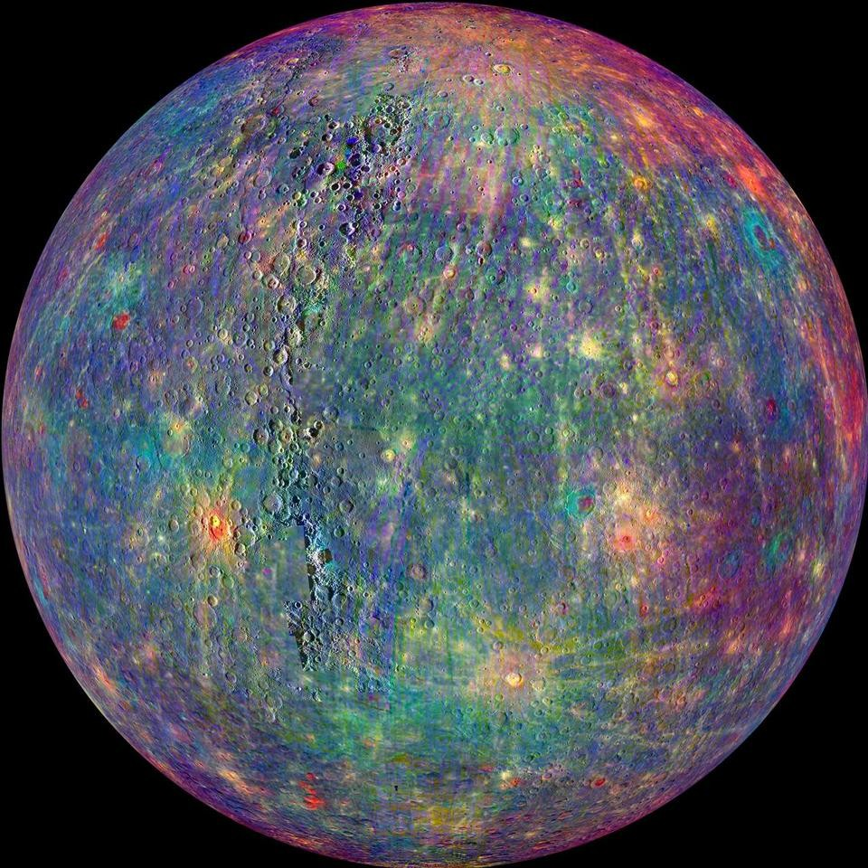
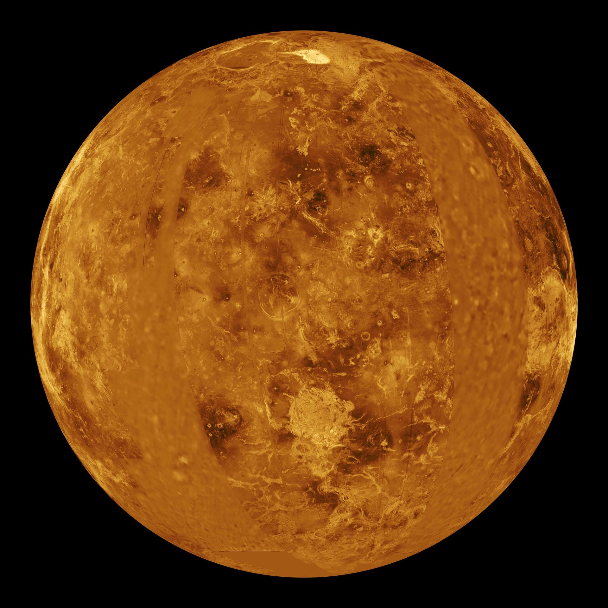
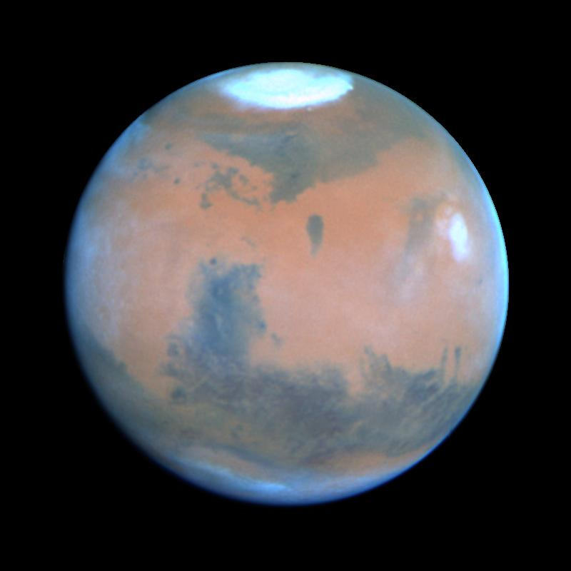
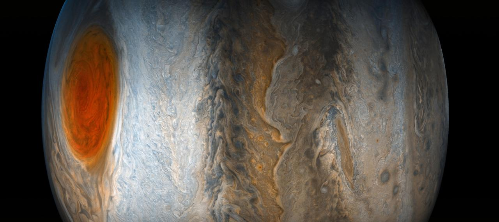
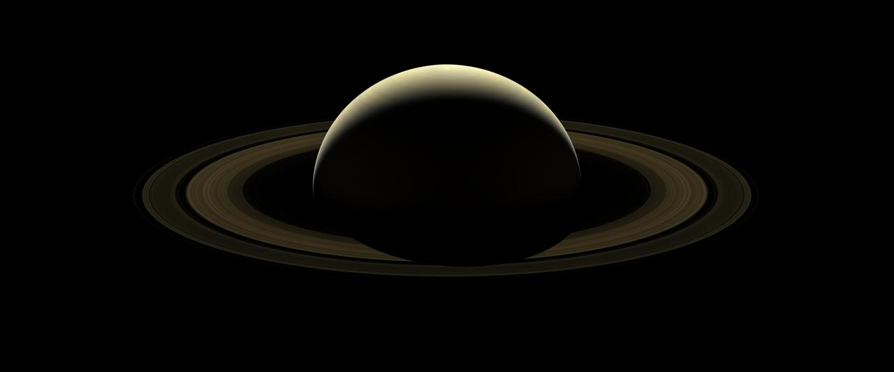
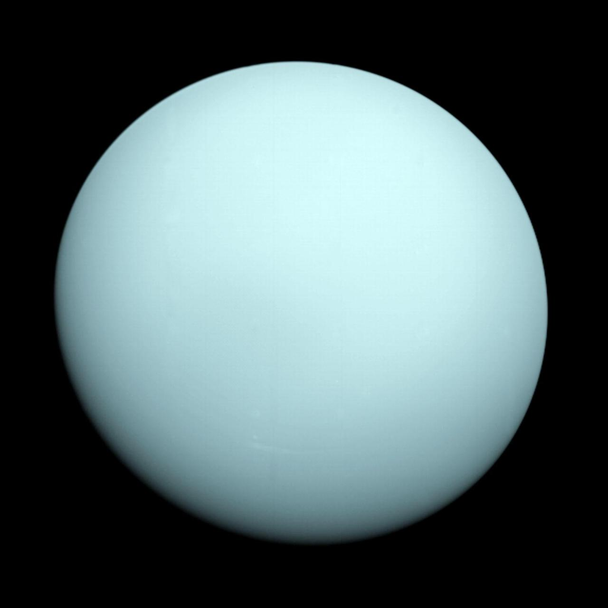
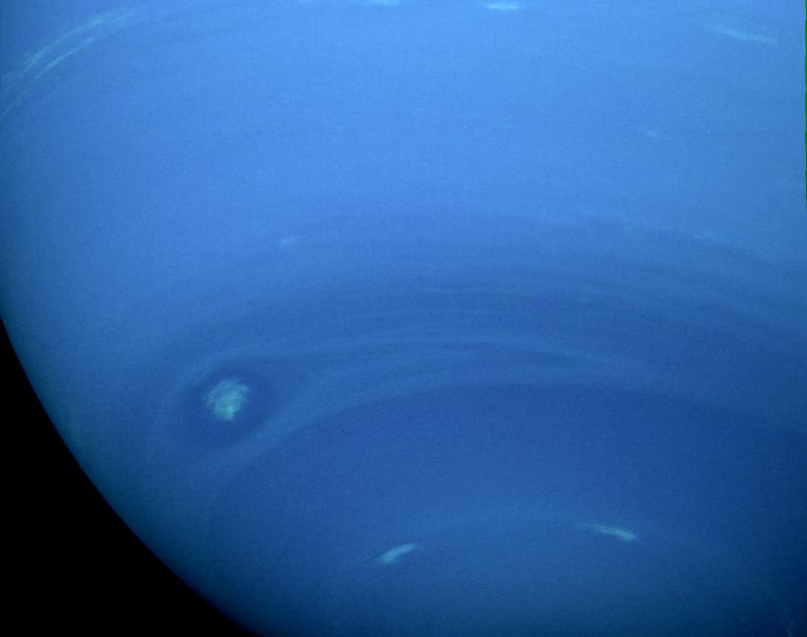

请举手回答
知识点
太阳像一座远方的能量站
它是一颗恒星
自己发光发热，是太阳系中心。
核心超热
约 1500 万°C，是开水的 15 万倍。
表面也很热
约 5500°C，比火焰还高。
阳光要赶路
到地球约 8 分钟。
课堂实验手电筒照在地球球上：哪一面是白天？哪一面是黑夜？

NASA/SDO 太阳耀斑真实图像：极紫外光显示高温太阳物质和爆发区域。
放大观察
八大行星，看图找特点
水星
最近 · 小 · 灰
金星
最热 · 黄白
地球
蓝绿 · 有生命
火星
红色 · 探险
木星
最大 · 条纹
土星
光环 · 很好认
天王星
青色 · 躺着转
海王星
蓝色 · 大风

NASA/JPL 示意图：只有太阳和八大行星，用来观察顺序和外形。
顺序：水金地火接着：木土天海记住：离太阳由近到远
第 2 课手工
照着照片给八大行星涂色








第 3 课开场游戏
你猜我话
- 准备 9 张卡：太阳 + 八大行星。
- 一人抽卡，只能用自己的话描述。
- 答案里的任何一个字都不能说：抽到“火星”，“火”和“星”都不能说。
- 不能画画、不能做动作，也没有文字线索。
- 其他同学认真听，猜它是谁。
可以描述颜色、大小、位置、光环、温度或表面特点。
名字里的字也不能说不能画画不能做动作只用说话
第 4 课
星座
与黑洞
先认识黑洞，再看十二星座，最后完成一张星座刮刮画。

星座是人类从地球看到的图案，黑洞可能来自特别大恒星的生命末期。
黑洞澄清
黑洞不会追着地球跑
- 黑洞是引力特别强的天体，不是宇宙怪兽。
- 它只会强烈影响很近的周围区域。
- 地球不会突然被远处黑洞吸走。
- 科学家靠光、气体运动和引力线索研究黑洞。

黑洞照片不是普通自拍，而是科学家用很多观测数据合成出的证据图像。
人类探索时间线
我们怎样一步步看见更远？
望远镜
把看不清的天空放大。
进入太空
人类第一次绕地球飞行。
登月
第一次踏上另一个天体。
太空站
在太空长期工作和生活。
从地球出发，人类靠工具和合作一步步走向太空。